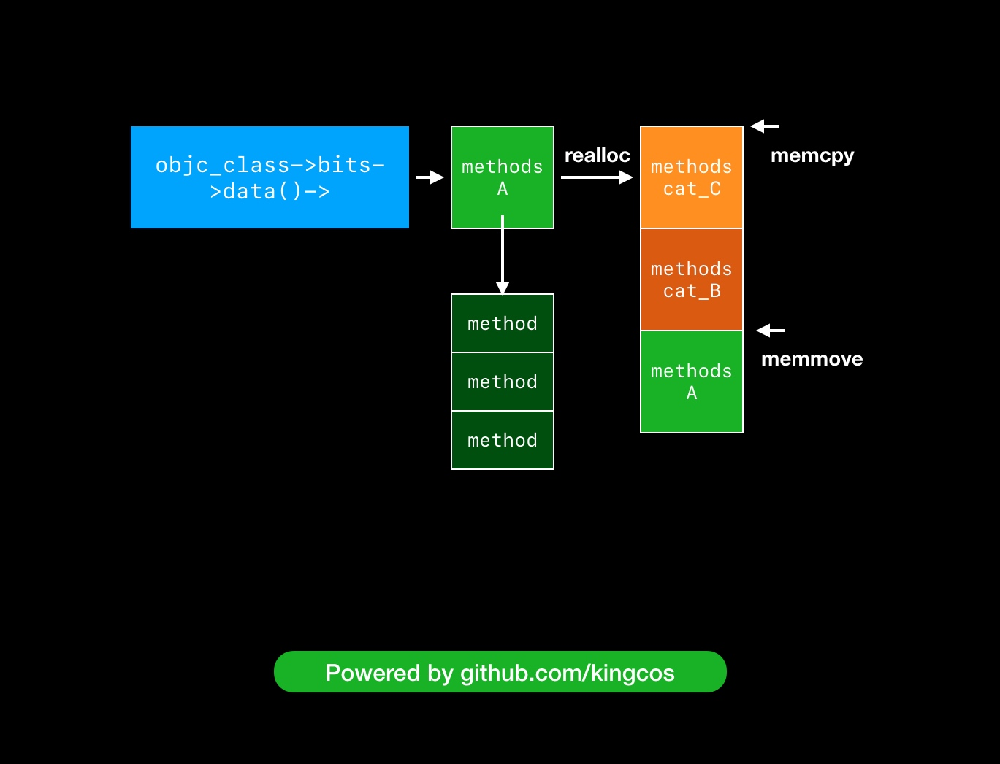

Category
官方文档
Category 的作用：
- 为已存在的类添加方法；
- 将类的实现分开在不同的代码文件里，减少单个代码文件的行数，将不同的功能组织到不同的 Category ，可以由多个开发者共同开发同一个类，按需加载对应的 Category ；
- 声明私有方法，借此将私有方法公开，方便调用；
- 模拟多继承；
- Method Swizzling ；
- 结合 Associated Objects 和 Category 给已有的类新增 Property ；
- 覆盖主类的实现（也可以说是副作用）。
深入理解 Category
深入解析 Category ：
- Category 和 Extension 的不同；
- 源码解析，Category 生成的
sturct； - Category 的属性，方法等是如何在通过 runtime 追加到主类中；
- Category 的加载顺序；
- Category 与 Associated Objects 。
如何调用被覆盖掉的主类方法：
Class currentClass = [MyClass class];
MyClass *my = [[MyClass alloc] init];
if (currentClass) {
unsigned int methodCount;
Method *methodList = class_copyMethodList(currentClass, &methodCount);
IMP lastImp = NULL;
SEL lastSel = NULL;
for (NSInteger i = 0; i < methodCount; i++) {
Method method = methodList[i];
NSString *methodName = [NSString stringWithCString:sel_getName(method_getName(method))
encoding:NSUTF8StringEncoding];
if ([@"printName" isEqualToString:methodName]) {
lastImp = method_getImplementation(method);
lastSel = method_getName(method);
}
}
typedef void (*fn)(id,SEL);
if (lastImp != NULL) {
fn f = (fn)lastImp;
f(my,lastSel);
}
free(methodList);
}
这里是顺序遍历，可以使用逆序遍历，找到第一个 IMP 就返回，会快那么一点点。
iOS 中的 Category
这篇文章非常详细，从 realloc 到 memmove 和 memcpy 都有讲：
